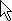
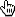
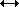
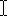
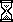
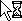

Working with the mouse¶
All pyglet windows can recieve input from a 3 button mouse with a 2 dimensional scroll wheel. The mouse pointer is typically drawn by the operating system, but you can override this and request either a different cursor shape or provide your own image or animation.
Mouse events¶
All mouse events are dispatched by the window which receives the event from the operating system. Typically this is the window over which the mouse cursor is, however mouse exclusivity and drag operations mean this is not always the case.
The coordinate space for the mouse pointer’s location is relative to the bottom-left corner of the window, with increasing Y values approaching the top of the screen (note that this is “upside-down” compared with many other windowing toolkits, but is consistent with the default OpenGL projection in pyglet).

The coordinate space for the mouse pointer.
The most basic mouse event is on_mouse_motion()
which is dispatched every time the mouse moves:
def on_mouse_motion(x, y, dx, dy):
pass
The x and y parameters give the coordinates of the mouse pointer, relative to the bottom-left corner of the window.
The event is dispatched every time the operating system registers a mouse
movement. This is not necessarily once for every pixel moved – the operating
system typically samples the mouse at a fixed frequency, and it is easy to
move the mouse faster than this. Conversely, if your application is not
processing events fast enough you may find that several queued-up mouse events
are dispatched in a single dispatch_events() call.
There is no need to concern yourself with either of these issues; the latter rarely
causes problems, and the former can not be avoided.
Many games are not concerned with the actual position of the mouse cursor, and only need to know in which direction the mouse has moved. For example, the mouse in a first-person game typically controls the direction the player looks, but the mouse pointer itself is not displayed.
The dx and dy parameters are for this purpose: they give the distance the mouse travelled along each axis to get to its present position. This can be computed naively by storing the previous x and y parameters after every mouse event, but besides being tiresome to code, it does not take into account the effects of other obscuring windows. It is best to use the dx and dy parameters instead.
The following events are dispatched when a mouse button is pressed or released, or the mouse is moved while any button is held down:
def on_mouse_press(x, y, button, modifiers):
pass
def on_mouse_release(x, y, button, modifiers):
pass
def on_mouse_drag(x, y, dx, dy, buttons, modifiers):
pass
The x, y, dx and dy parameters are as for the
on_mouse_motion() event.
The press and release events do not require dx and dy parameters as they
would be zero in this case. The modifiers parameter is as for the keyboard
events, see Working with the keyboard.
The button parameter signifies which mouse button was pressed, and is one of the following constants:
pyglet.window.mouse.LEFT
pyglet.window.mouse.MIDDLE
pyglet.window.mouse.RIGHT
The buttons parameter in on_mouse_drag()
is a bitwise combination of all the mouse buttons currently held down. For example,
to test if the user is performing a drag gesture with the left button:
from pyglet.window import mouse
def on_mouse_drag(x, y, dx, dy, buttons, modifiers):
if buttons & mouse.LEFT:
pass
When the user begins a drag operation (i.e., pressing and holding a mouse
button and then moving the mouse), the window in which they began the drag
will continue to receive the on_mouse_drag()
event as long as the button is held down. This is true even if the mouse leaves
the window. You generally do not need to handle this specially: it is a convention
among all operating systems that dragging is a gesture rather than a direct
manipulation of the user interface widget.
There are events for when the mouse enters or leaves a window:
def on_mouse_enter(x, y):
pass
def on_mouse_leave(x, y):
pass
The coordinates for on_mouse_leave() will lie outside of your window.
These events are not dispatched while a drag operation is taking place.
The mouse scroll wheel generates the on_mouse_scroll() event:
def on_mouse_scroll(x, y, scroll_x, scroll_y):
pass
The scroll_y parameter gives the number of “clicks” the wheel moved, with positive numbers indicating the wheel was pushed forward. The scroll_x parameter is 0 for most mice, however some new mice such as the Apple Mighty Mouse use a ball instead of a wheel; the scroll_x parameter gives the horizontal movement in this case. The scale of these numbers is not known; it is typically set by the user in their operating system preferences.
Changing the mouse cursor¶
The mouse cursor can be set to one of the operating system cursors, a custom
image, or hidden completely. The change to the cursor will be applicable only
to the window you make the change to. To hide the mouse cursor, call
set_mouse_visible():
window = pyglet.window.Window()
window.set_mouse_visible(False)
This can be useful if the mouse would obscure text that the user is typing. If you are hiding the mouse cursor for use in a game environment, consider making the mouse exclusive instead; see Mouse exclusivity, below.
Use set_mouse_cursor() to change the appearance of the mouse cursor.
A mouse cursor is an instance of MouseCursor. You can obtain the operating
system-defined cursors with get_system_mouse_cursor():
cursor = window.get_system_mouse_cursor(win.CURSOR_HELP)
window.set_mouse_cursor(cursor)
The cursors that pyglet defines are listed below, along with their typical appearance on Windows and Mac OS X. The pointer image on Linux is dependent on the window manager.
Constant Windows XP Mac OS X CURSOR_DEFAULT  
CURSOR_CROSSHAIR 

CURSOR_HAND 
 CURSOR_HELP 
CURSOR_NO 

CURSOR_SIZE 
CURSOR_SIZE_DOWN 
CURSOR_SIZE_DOWN_LEFT 
CURSOR_SIZE_DOWN_RIGHT CURSOR_SIZE_LEFT  CURSOR_SIZE_LEFT_RIGHT 
CURSOR_SIZE_RIGHT 
CURSOR_SIZE_UP CURSOR_SIZE_UP_DOWN 
CURSOR_SIZE_UP_LEFT CURSOR_SIZE_UP_RIGHT CURSOR_TEXT  
CURSOR_WAIT  
CURSOR_WAIT_ARROW 
Alternatively, you can use your own image as the mouse cursor. Use
pyglet.image.load() to load the image, then create an
ImageMouseCursor with
the image and “hot-spot” of the cursor. The hot-spot is the point of the
image that corresponds to the actual pointer location on screen, for example,
the point of the arrow:
image = pyglet.image.load('cursor.png')
cursor = pyglet.window.ImageMouseCursor(image, 16, 8)
window.set_mouse_cursor(cursor)
You can even render a mouse cursor directly with OpenGL. You could draw a
3-dimensional cursor, or a particle trail, for example. To do this, subclass
MouseCursor and implement your own draw method. The draw method will be
called with the default pyglet window projection, even if you are using
another projection in the rest of your application.
Mouse exclusivity¶
It is possible to take complete control of the mouse for your own application, preventing it being used to activate other applications. This is most useful for immersive games such as first-person shooters.
When you enable mouse-exclusive mode, the mouse cursor is no longer available. It is not merely hidden – no amount of mouse movement will make it leave your application. Because there is no longer a mouse cursor, the x and y parameters of the mouse events are meaningless; you should use only the dx and dy parameters to determine how the mouse was moved.
Activate mouse exclusive mode with set_exclusive_mouse():
window = pyglet.window.Window()
window.set_exclusive_mouse(True)
You should activate mouse exclusive mode even if your window is full-screen: it will prevent the window “hitting” the edges of the screen, and behave correctly in multi-monitor setups (a common problem with commercial full-screen games is that the mouse is only hidden, meaning it can accidentally travel onto the other monitor where applications are still visible).
Note that on Linux setting exclusive mouse also disables Alt+Tab and other hotkeys for switching applications. No workaround for this has yet been discovered.